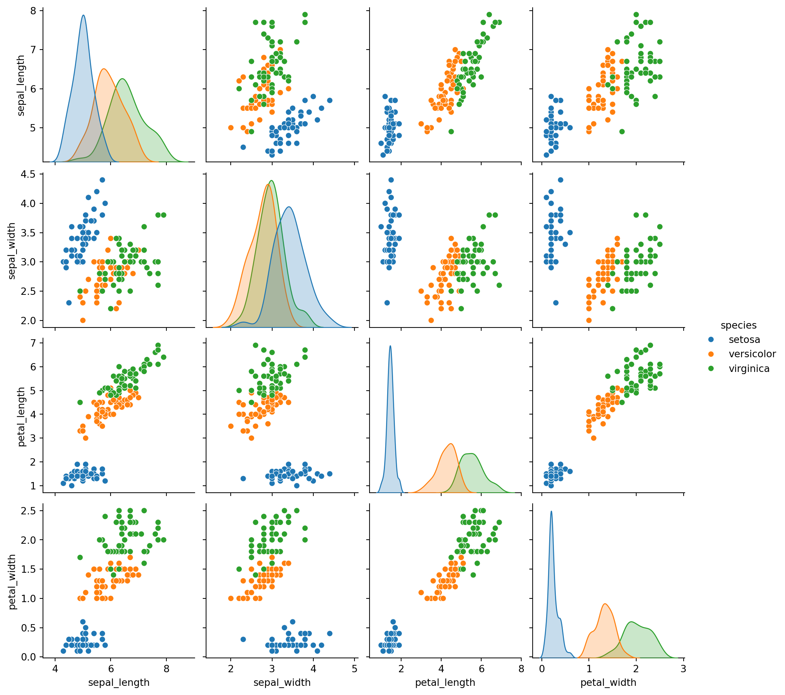

Module 1 — Data Foundations and Exploratory Data Analysis
Introductory Module for Postgraduate Mathematics Students and Mathematics Faculty
Author
Siju Swamy
Introduction
Modern scientific research and technological innovation are fundamentally data–driven. Across disciplines—engineering, healthcare, economics, environmental sciences, and artificial intelligence—data is the essential raw material that fuels knowledge creation, modelling, and decision making.
This introductory module connects mathematical theory with computational practices to prepare mathematicians for research and professional environments where quantitative reasoning and computational thinking play a central role.
What is Data?
Data refers to quantified measurements, observations, records or symbols used to describe objects, events, behaviours, or natural phenomena.
In a formal mathematical sense, data can be considered as elements of a set\[
X = \{x_1, x_2, \dots, x_n\} \subset \mathbb{R}^d
\] where each \(x_i\) is a \(d\)-dimensional vector representing measurable features.
Examples:
A medical dataset: \(x_i = (\text{age}, \text{height}, \text{blood pressure})\)
Exploratory Data Analysis (EDA) is the process of systematically examining a dataset to discover patterns, identify anomalies, test assumptions, and validate hypotheses using summary statistics and graphical representations. It is the first and most essential step in any analytical or machine learning workflow.
In simple terms, EDA tells us the story hidden inside the data.
Why is EDA Important?
EDA is crucial because:
It helps understand the structure and characteristics of a dataset before formal modelling.
It reveals hidden relationships among variables.
It identifies noise, outliers, missing values, and inconsistencies.
It guides the selection of appropriate statistical or machine learning models.
It prevents incorrect assumptions that could lead to misleading conclusions.
Without EDA, modelling becomes guesswork rather than a scientifically grounded analysis.
Common Statistical Tools Used in EDA
Statistical Method
Purpose
Mean, Median, Mode
Central behaviour of data
Variance, Standard Deviation
Spread or variability
Quantiles & IQR
Range and distribution behaviour
Correlation measures
Strength and direction of relationships
Covariance matrices
Linear dependence structure
Normality tests
Distributional assumptions
Common Visualization Tools in EDA
Plot Type
Purpose
Histogram
Distribution and skewness
Boxplot
Outliers and spread
Scatter Plot
Relationship between paired variables
Pairplot (matrix plot)
All relationships in multivariate dataset
Heatmap
Correlation structure
Violin Plot / KDE plot
Shape of distribution
Data visualization converts numeric tables into human-understandable patterns and evidence.
How EDA Helps at Different Levels
Stakeholder
Benefit
Common Individual
Gains clarity about dataset behaviour without technical depth
Makes informed strategic decisions based on evidence instead of intuition
Real-world example:
In healthcare analytics, EDA may reveal that a specific symptom correlates strongly with disease severity.
Decision makers can deploy targeted interventions or allocate resources precisely.
Thus, EDA transforms raw data into insight, and insight into action.
The Iris Dataset — Historical and Scientific Importance
Before conducting the exploratory analysis, it is important to introduce the dataset that will be used throughout this module: the Iris Flower Dataset, one of the most well-known benchmarks in statistics, machine learning, and pattern recognition.
The dataset was first introduced by Sir Ronald Aylmer Fisher (1890–1962) in his groundbreaking 1936 paper titled “The Use of Multiple Measurements in Taxonomic Problems”. Sir R. A. Fisher, widely regarded as the Father of Modern Statistics, pioneered foundational concepts such as maximum likelihood estimation, analysis of variance (ANOVA), and statistical experimental design. His Iris study demonstrated how quantitative measurements could be used to classify biological specimens through multivariate statistics—an idea that evolved into modern machine learning classification techniques.
Description of the Dataset
The Iris dataset consists of 150 samples of iris flowers collected from three species:
Species
Count
Iris setosa
50
Iris versicolor
50
Iris virginica
50
For each sample, four morphological measurements were recorded (in centimetres):
Feature
Description
Sepal Length
length of the outer part of the flower
Sepal Width
width of the outer part
Petal Length
length of the inner petal
Petal Width
width of the inner petal
Thus, the dataset can be represented mathematically as: \[
X = \{x_1, x_2, \dots, x_{150}\} \subset \mathbb{R}^4
\] where each vector \[
x_i = (\text{sepal length},\ \text{sepal width},\ \text{petal length},\ \text{petal width})
\]
The corresponding class label \[
y_i \in \{\text{setosa}, \text{versicolor}, \text{virginica}\}
\]
Why is the Iris Dataset Important?
Serves as an ideal educational dataset for demonstrating statistical and machine learning concepts.
Exhibits distinct geometric separation between classes, inspiring early classification algorithms.
Provides simple structure yet complex enough for real-world pattern recognition.
Forms the basis for classical methods such as Linear Discriminant Analysis (LDA) introduced by Fisher himself.
Iris Dataset and EDA
The Iris dataset is particularly suited for Exploratory Data Analysis because:
It contains both numeric features and categorical labels.
It enables visual analysis of relationships between pairs of variables.
It reveals distributional differences across species.
It supports understanding of dimensionality reduction and classification.
With this context, we now proceed to perform a detailed EDA of the dataset.
Exploratory Data Analysis with the Iris Dataset
A glimps of the datset is shown below:
Code
import pandas as pdimport seaborn as snsimport matplotlib.pyplot as plt# Load iris datasetdf = sns.load_dataset("iris")# Display first rowsdf.head()
sepal_length
sepal_width
petal_length
petal_width
species
0
5.1
3.5
1.4
0.2
setosa
1
4.9
3.0
1.4
0.2
setosa
2
4.7
3.2
1.3
0.2
setosa
3
4.6
3.1
1.5
0.2
setosa
4
5.0
3.6
1.4
0.2
setosa
A summary of the dataset is shown below:
Code
df.describe()
sepal_length
sepal_width
petal_length
petal_width
count
150.000000
150.000000
150.000000
150.000000
mean
5.843333
3.057333
3.758000
1.199333
std
0.828066
0.435866
1.765298
0.762238
min
4.300000
2.000000
1.000000
0.100000
25%
5.100000
2.800000
1.600000
0.300000
50%
5.800000
3.000000
4.350000
1.300000
75%
6.400000
3.300000
5.100000
1.800000
max
7.900000
4.400000
6.900000
2.500000
Pairwise Relationships
Code
sns.pairplot(df, hue='species')plt.show()

Feature Distributions
Code
df.hist(figsize=(8,6), bins=10)plt.suptitle("Distribution of Features in Iris Dataset")plt.show()